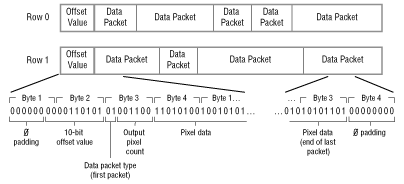

A cel's type determines how the cel's pixels are stored in a source data file. Cels can devote 1, 2, 4, 6, 8, or 16 bits per pixel (bpp); and that a cel can be either packed to compress the pixel data, or unpacked so each pixel is stored in fully intact.
Pixels are stored in a source data file in sequential order, starting at the upper-left corner of the cel, reading each pixel row from left to right, and moving from top to bottom as each row is stored. There is no data interposed between pixels to mark the end of a row or the end of the cel; the cel dimensions supplied in the cel's preamble tell the cel engine when one row starts and another begins, and when all the cel's pixels have been read. However, it is important that each new row of pixels starts on a word boundary. If there are unused bits in the last word of a row, they may be filled with 0s or random values-the cel engine will not read them. These should be filled with 0s for future compatibility.
Although an unpacked source data file can take much more RAM than a packed source data file, and can be slower to read, unpacked source data has two main advantages:
To pack a cel's pixels, you must first divide the cel image into rows. Each row is compressed and then stored as a discrete unit within the source data file. Packed pixels are stored from left to right within a row. And compressed rows are stored from top to bottom within the source data file.
Each row in the data file has two parts:
The offset is always stored in the first byte of a 32-bit word. If the offset is an 8-bit value, then use bits 31-24 of the word, and store cel image data in the second, third, and fourth bytes of the word. If the offset is a 10-bit value, then use bits 25-16 in the first two bytes of the word and set bits 31-26 to 0. Bytes three and four of the word are used for cel image data.
The offset must subtract 2 from the next row's beginning address before it calculates the distance from the current row's beginning address to accommodate the pipelined architecture of the cel engine.
Table 1: Types of data packets.
---------------------------------------------------------
Data Type(2 bits) |Output Pixel Count(6|Pixel Data(N
|bits) |bits)
---------------------------------------------------------
PACK_LITERAL (01) |Output count +1 of |One or more
|the literal pixels |literal pixels
|that follow |
---------------------------------------------------------
PACK_REPEAT (11) |Output count +1 of |One pixel
|the number of times |
|the single pixel |
|that follows is |
|repeated |
---------------------------------------------------------
PACK_TRANSPARENT |Output count +1 of |No pixel data
(10) |transparent pixel in|
|this packet |
---------------------------------------------------------
PACK_EOL (00) |No count, no count |No pixel data
|bits |
---------------------------------------------------------
When a row of 8-bit pixels is compressed into packets and stored, the row might look like the one in Figure 1. Packets are bit-packed together; they do not have to be boundary aligned. If the last packet ends before the next word boundary, the empty bits in the current word are filled with 0s. Because the EOL packet is just two 0s in a row, any word filled with two or more 0s at its end automatically supplies an EOL packet.

Figure 1: A row of compressed data.